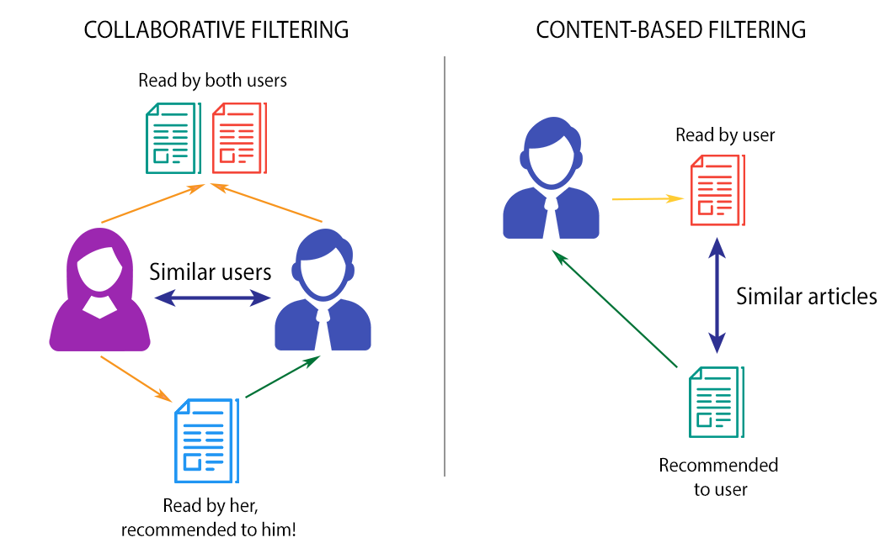

Collaborative filtering
Useful when there is a lot of interaction data. It is similar to asking, “People like you also liked this.”
CS1102 - Course Project - 2025/2026 Semester B
Collaborative, content-based, and hybrid methods explained with simple examples.
Basics
A recommender system predicts which items a user may find useful, such as movies, songs, products, or articles. Businesses use them to help users find content faster and to make large catalogs easier to explore.
Core methods
| Method | How it works | Strength | Weakness |
|---|---|---|---|
| Collaborative filtering | Looks at behavior from many users to find similar preference patterns. | Can discover unexpected items that fit a user’s taste. | Needs enough user interaction data. |
| Content-based filtering | Matches items by features such as genre, keywords, or category. | Works well when item descriptions are rich. | Can become too narrow and repetitive. |
| Hybrid approach | Combines behavior data and item features in one system. | Balances the benefits of both methods. | More complex to design and tune. |
Useful when there is a lot of interaction data. It is similar to asking, “People like you also liked this.”
Useful when item descriptions are strong. It is similar to saying, “You liked this movie, so here are other movies with similar themes.”
Useful when a business wants both broad behavior signals and item-feature signals, especially for new or rare items.

Large scale
Candidate generation quickly narrows the catalog. Scoring ranks the most promising items more carefully. Re-ranking then applies business goals such as freshness, diversity, and policy rules.